Sunday. The A350 in the morning, mother and Mira at the gate. The long quiet hours over the pole, the kind of in-flight time that doesn't quite count as part of either country.
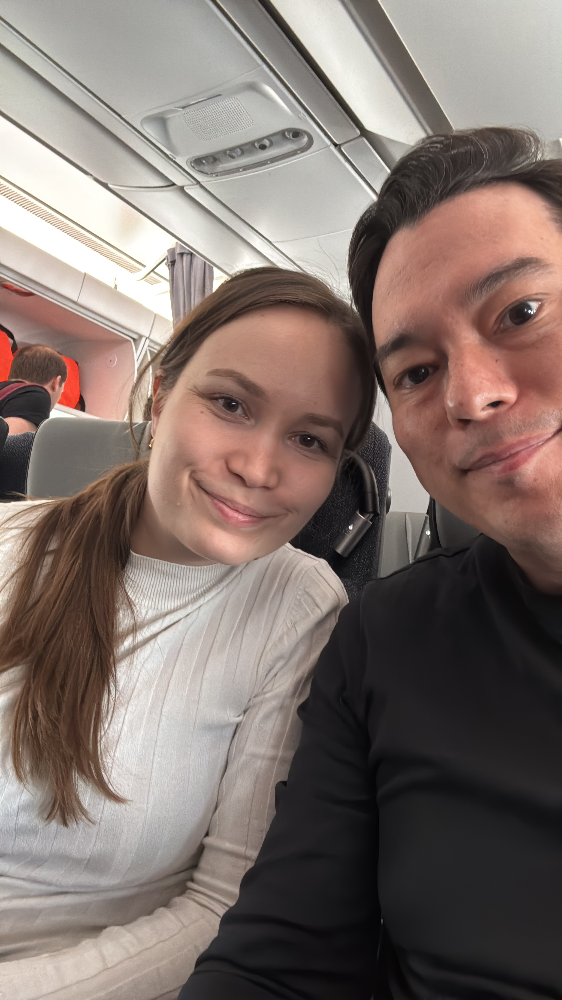
Somewhere mid-flight.
KIX in the early afternoon. By the time we reached Kujo, the light was already turning gold through the old streets nearby — that first walk through a Japanese neighborhood you've only seen in photos.
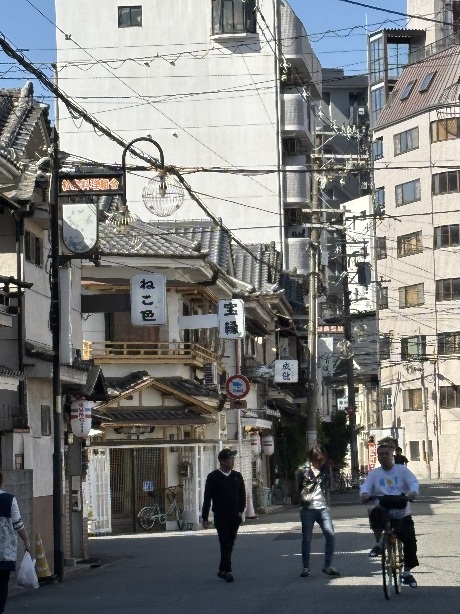
松島 · a few minutes from the apartment.
Five minutes to Suisei. A small father-and-son shop on a quiet street. No menu. Counter seats. The omakase came one piece at a time — unfolding the way these places do, without explanation or fuss.
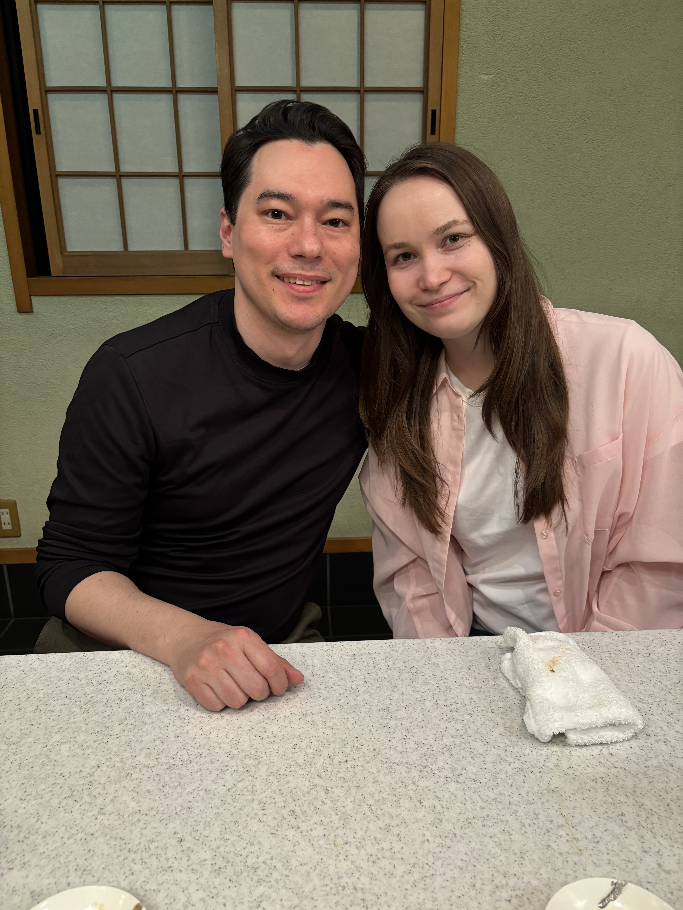
At Suisei, shoji light behind us.
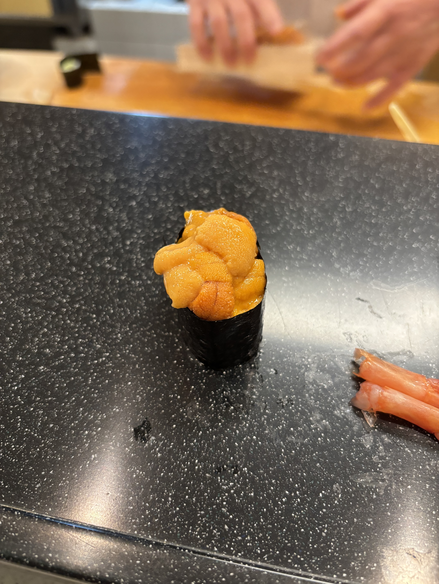
Uni · the one we'll remember.
"So lovely."
noticed in passing
A Japanese tote brand calling itself Väska by moz, dressed in the Swedish flag and the line "Nära naturen, nära varandra" · a row of Aloha gnomes on a shelf somewhere, perfectly out of place
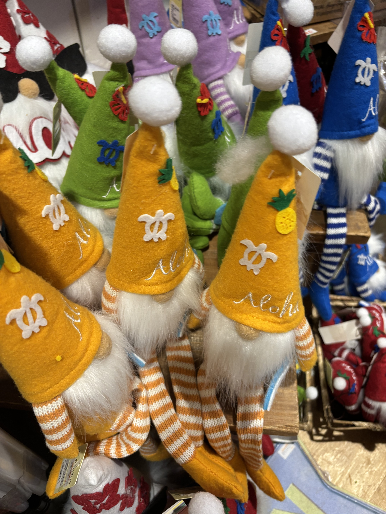
11
Mon
月曜
記
Errands · Aeon · Shinsaibashi
朝寝坊slow start · jet lag still in the legs
Errands and arcades
Monday. Woke late — jet lag still in the legs. Morning went on errands: the bank, paying the 不動産屋 and 司法書士 fees that sit underneath Wednesday's settlement in Sanda. The kind of paperwork that makes a trip feel real rather than imagined.
Lunch at Aeon Mall, Dome-mae — air-conditioned, everything under one roof. The right move with everyone still recovering. Back to Kujo for a light dinner cooked at the apartment.
In the evening, just Mira and I out to Shinsaibashi and Dotonbori. The arcade was wall-to-wall tourists — that Osaka density after dark, neon over crowds, sound bouncing off the segmented roof. Picked up a shirt-and-overshirt combination at Wego.
Shinsaibashi, after dark.
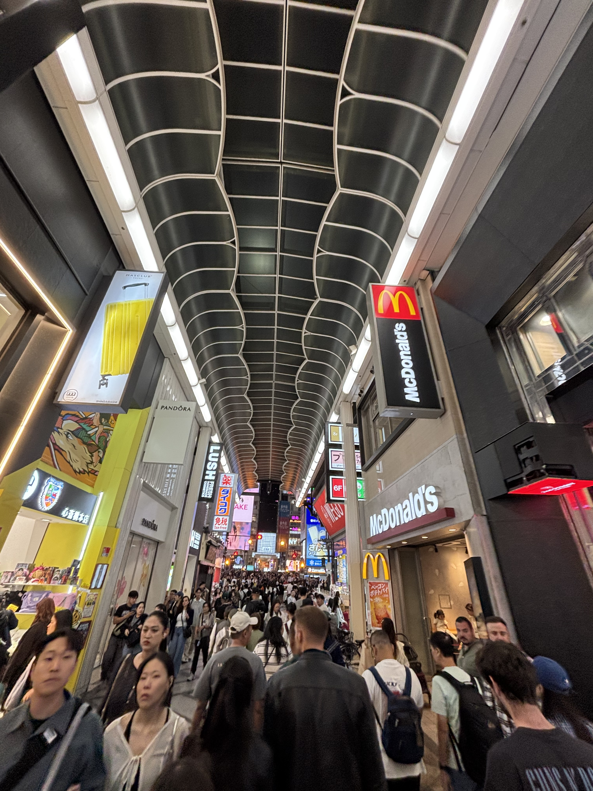
The roof, the crowd.
A second day in the slow gear.
12
Tue
火曜
記
Matsuoka-san · Bic Camera · a small bar
ぼんやりstill groggy · jet lag in the legs
Still groggy
Tuesday. Still groggy — the jet lag refusing to lift on schedule. Settled last night that the international wire needs the main post office, dad present at the counter; that goes on tomorrow's list.
Today was Matsuoka-san. The insurance man came by the Airbnb to walk us through the return of the ten months' overpay. The trickiest part was geographic: trying to explain Nishi-ku Kujo when half the city hears Nishikujo — different ward, across the river, a perennial source of confusion we now own. After he left, finished the 司法書士 transfer at the local post bank.
Then to Bic Camera. Mum got her new iPhone. Back to the apartment for a long rest.
Later, just Mira and I out for a wander, and we stumbled into a small bar a few minutes from the Airbnb — Hoodie by Chicherone, owner-designer, the kind of low-key curated room you only find by walking. Thinking of t-shirts as gifts to bring home.
to revisit
Hoodie by Chicherone · small bar near the apartment, designer-owned · t-shirts as gifts for home · @hoodie_by_chicherone
13
Wed
水曜
記
Donki · Parco · Daiso · documents
ぼんやりstill adjusting to the time difference
The day before Sanda
Wednesday. Still adjusting — that fourth-day fatigue that should be lifting and isn't quite. The day arranged itself around tomorrow.
Late morning, Mira and I out to Namba. Don Quijote first, omiyage for home. Then up the Shinsaibashi-suji shotengai to Parco — the arcade as crowded by daylight as it had been at night a few days ago.
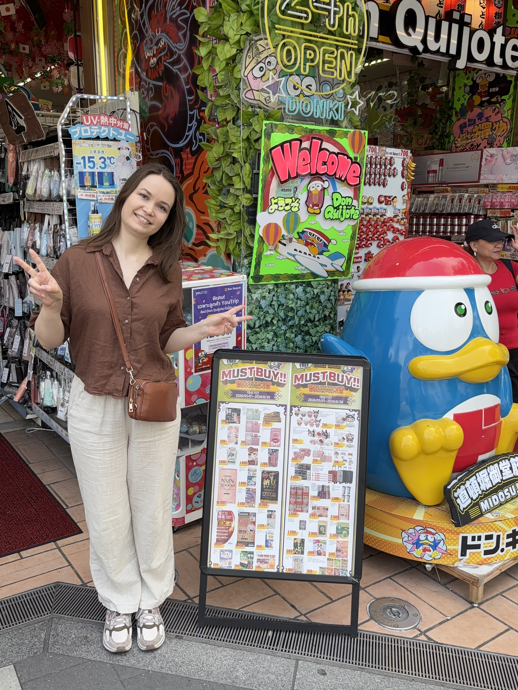
Donki, Namba.
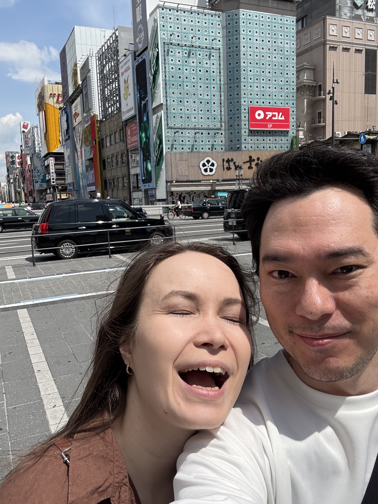
Dotonbori, in the sun.
Up at Parco, the Donguri Republic on the upper floors — Jiji and Totoro and Howl all gathered politely on the shelves.
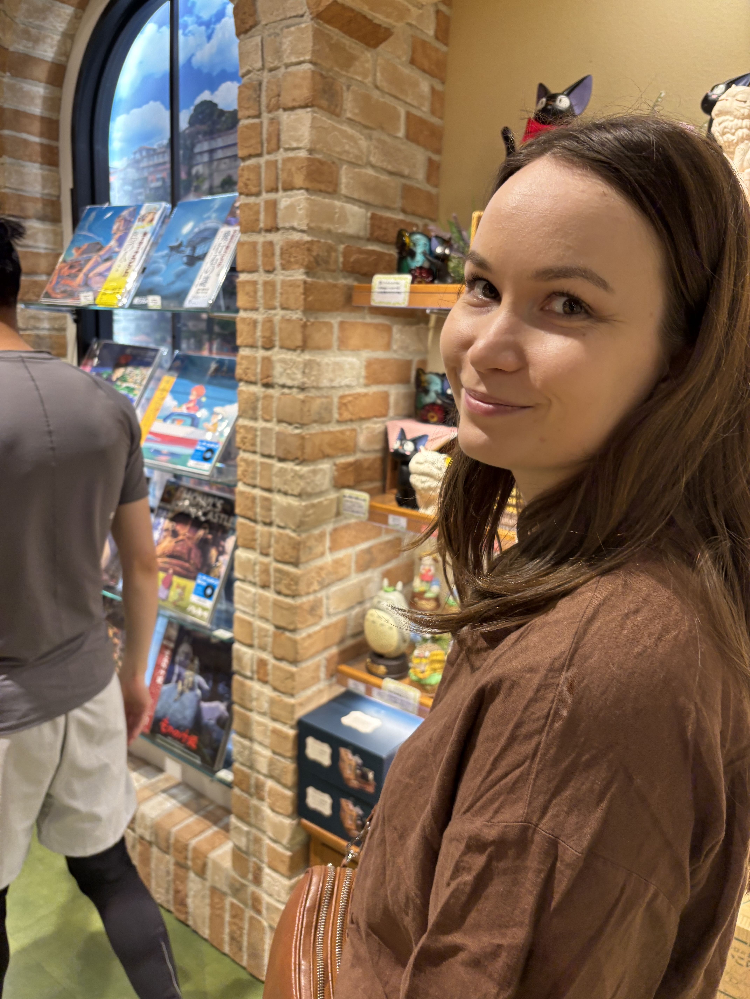
Donguri Republic, Parco.
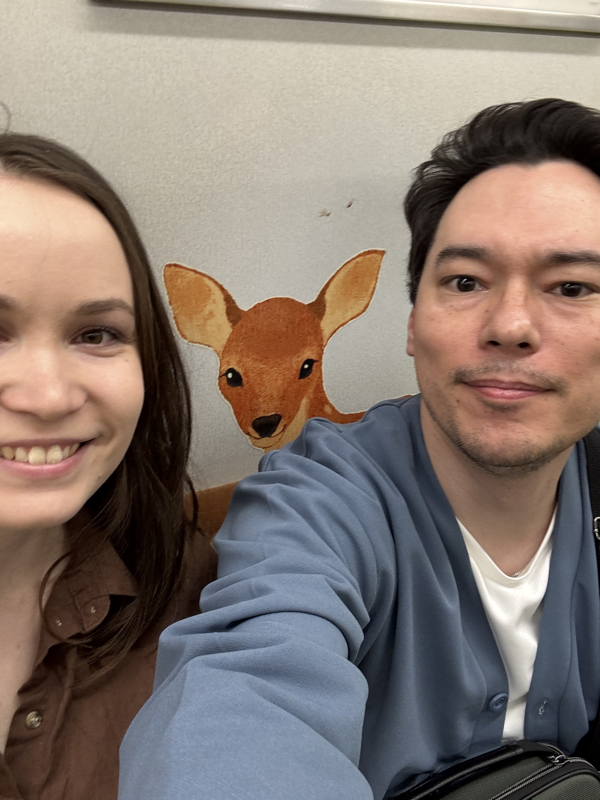
A small deer in passing.
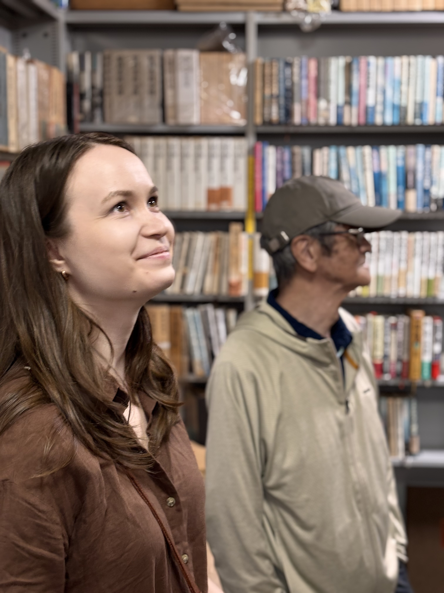
Among the books.
Back to Kujo by late afternoon. Out again with the parents — the local Kujo sennichi-doori shotengai at golden hour, lanterns warming up, the small Daiso a few doors down. The small things that always need picking up.
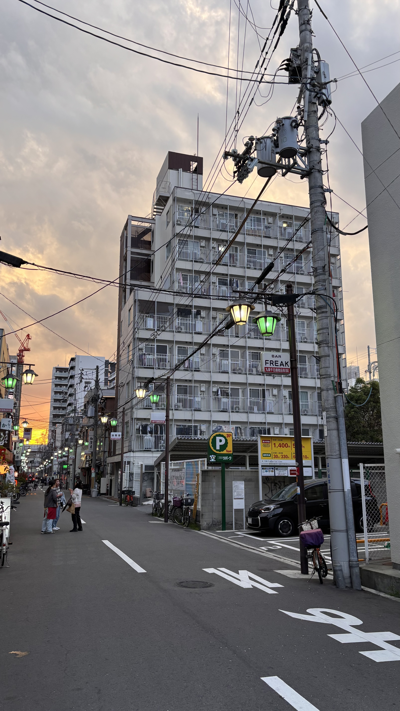
九条千日通 · the local shotengai at golden hour.
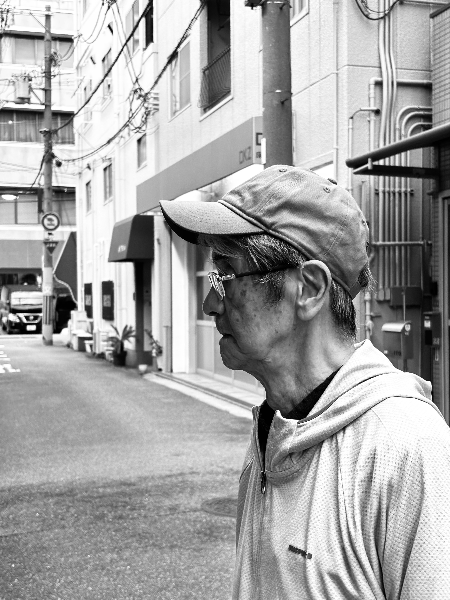
Dad, in profile.
Cooked dinner at the apartment. After plates were cleared, the survey documents came out — the 1985 cadastral map of the property in Kitarokkō, Nishinomiya, triangulated measurements and the careful handwritten numbers from forty years ago. Tomorrow it all goes to Sanda.
地積測量図 · 1985, the property in Kitarokkō.
Bed early.
tomorrow
Drive to Sanda · settlement · Sandaya Honten for lunch
14
Thu
木曜
記
Settlement · the Matsui's · Kazumi-chan's
晴れKujo → Sanda → Kobe-Kita → Kazumi-chan's
Sanda · the settlement, and family
Thursday. The day.
Up early to fetch the car at Toyota Namba — a white Crown with Naniwa plates, ready and polished. The drive back to Kujo turned into a small comedy of one-way streets that don't resolve into anything you can intuit. Eventually back to the house, collected the parents, and we set off.
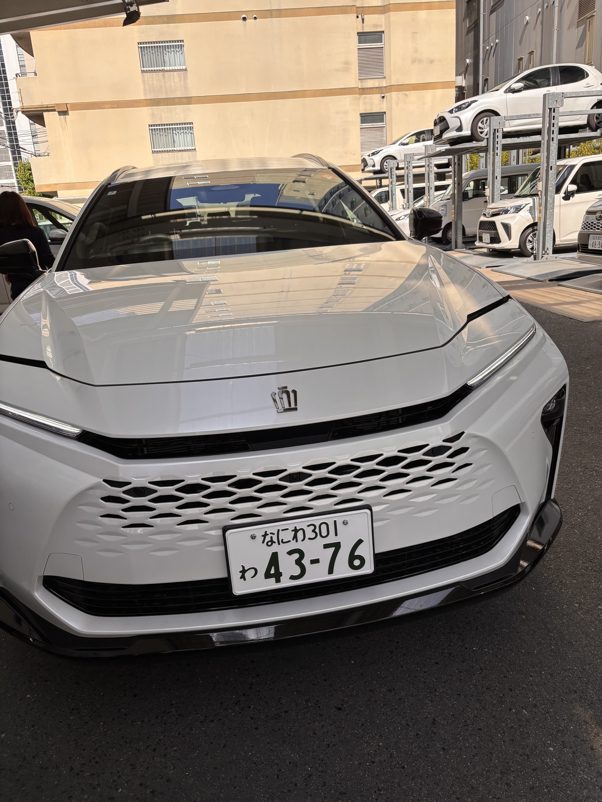
Naniwa 301 · the day's car.
Sanda Woodytown is an hour or so out of Osaka — kōsoku, then smaller country roads, the Japanese navigation alternately precise and inscrutable.
The settlement went well. A long stack of papers, every page initialed and stamped — there's something almost nostalgic about it after living in Finland, where everything is handled online. A breath of the nineties, all of it tangible.
Then off to Aeon Mall Kobe-Kita for a celebratory lunch with the Matsui's — we ended up at a Chinese place, drawn in by a display of takesumi-colored gyoza in bamboo-charcoal black, and a generous plate of dragon cha-han to share.
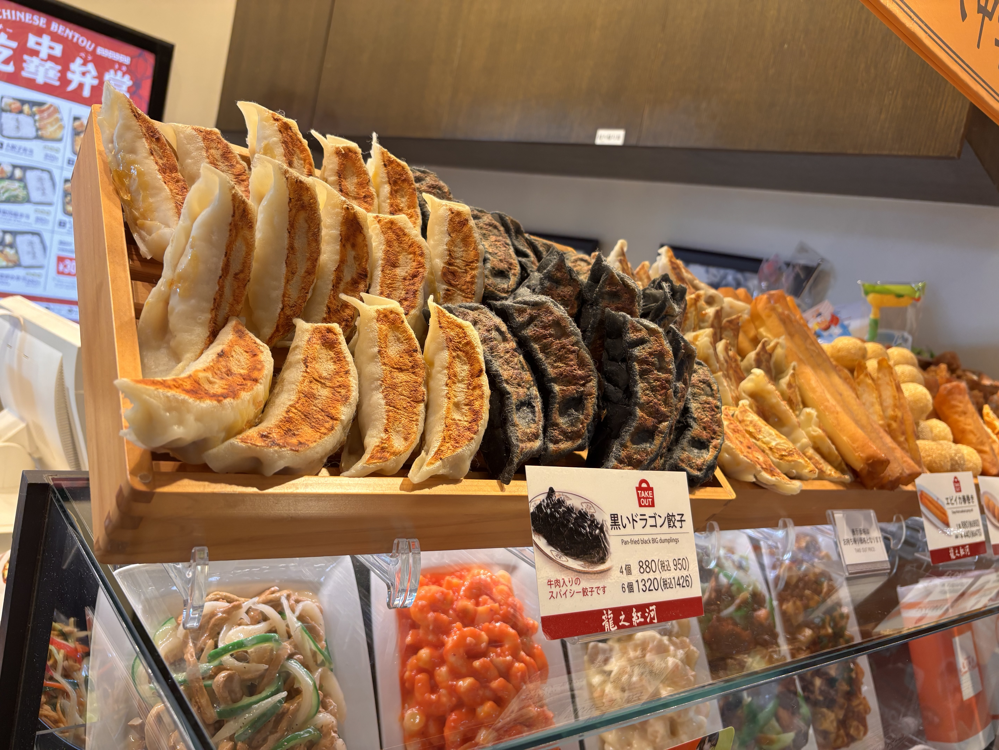
黒いドラゴン餃子 · takesumi-charcoal gyoza on display.
The day ended at Kazumi-chan's house. The parents back among family. A celebratory dinner — mum's favourite oden, sushi enough for everyone. A small lit window above the door held a row of Moomin figurines, watching the evening: a piece of Finland sitting quietly in a Japanese house.
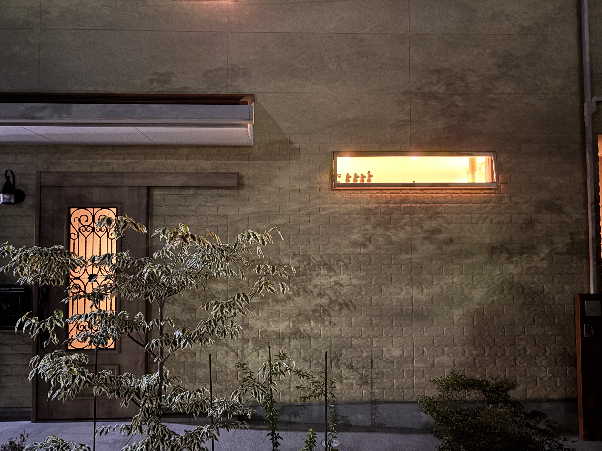
Kazumi-chan's, after dark. The Moomins watching.
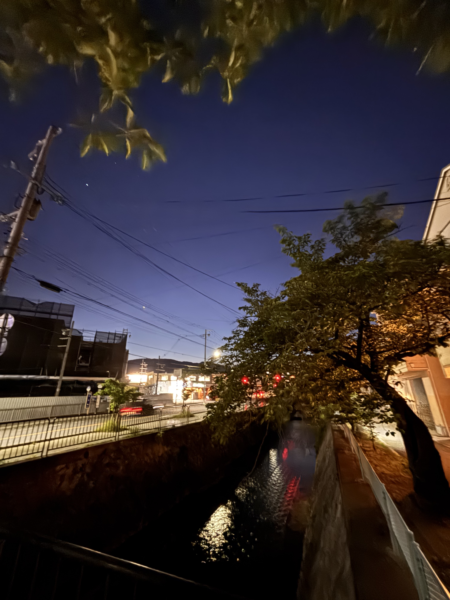
Nishinomiya at night, walking out.
A long, full, important day.
15
Fri
金曜
記
Nishinomiya · Tower vinyls · Molto!
晴れKujo → Nishinomiya → Umeda
Refiguring
Friday. The day refigured itself overnight. Instead of going straight to the main post office for the international wire, we realised we needed dad's My Number first — that meant Nishinomiya shiyakusho. Mira stayed at the apartment to nurse a sore throat.
鯉のぼり · still up on a Kujo balcony, a fortnight after Children's Day.
Nishinomiya City Hall sits beside a small grassy square — a quiet errand, a stamp, the document we needed. By mid-afternoon we were back in Kujo.
Outside the shiyakusho.
Mira was already feeling better. Late sun coming down the shotengai, lanterns warming up, the street settling.
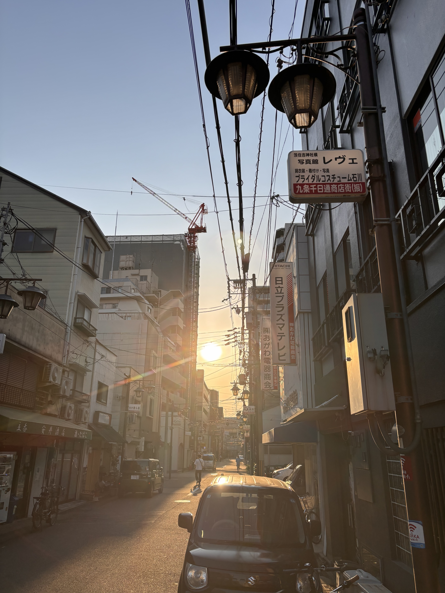
Kujo shotengai, sun at the end of it.
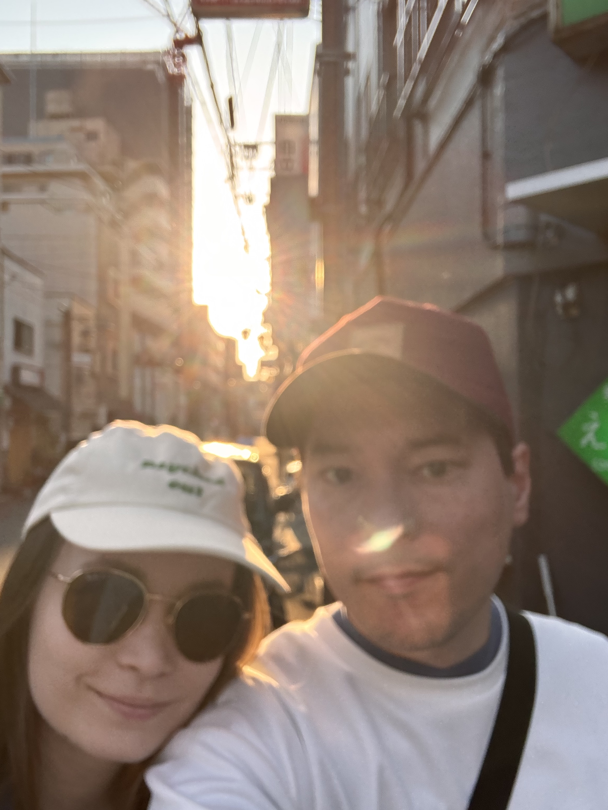
Late light.
Out to Umeda Chayamachi for vinyls. The way there involved getting properly lost in the Hankyu Umeda underground — that mazelike system that promises an exit and keeps offering another corridor, indefinitely. We surfaced eventually. At Tower Records: Sakamoto and Matsubara on the shelves, both found. Small wins.
Nearby, a vintage shop swallowed an hour — amber lamps, racks of denim, mannequins in striped shirts, Mira looking up at something high on the wall.
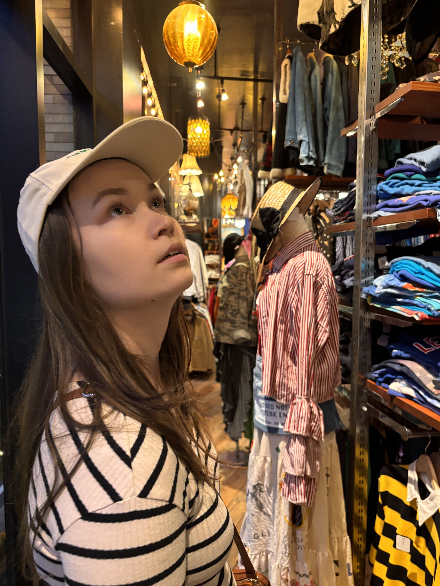
Chayamachi, an hour gone.
The day ended at Molto! View, the beer bar above the station — packed with salarymen marking Friday, beer and snacks at every table, all of Umeda lit up through the window: JR Osaka, Yodobashi, the towers beyond.
Molto!
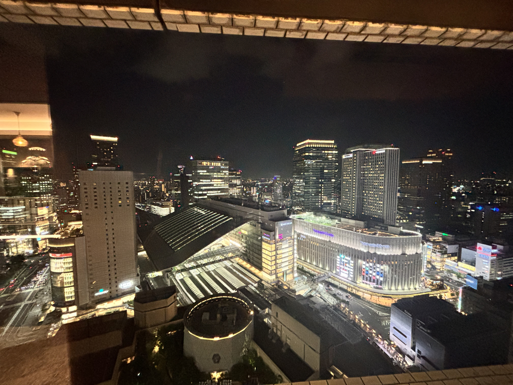
JR Osaka and Yodobashi from above.
The day refigured itself. It found its own shape.
noticed in passing
BABY BODY BURGER · Burger King's five-patty 二代目 special, officially sanctioned by the Japan Sumo Association · ¥2,890
Saturday. The longest arc of the trip so far — south Osaka all morning and into the afternoon, back through Namba in the evening. More ground than any day since arrival, and somehow not tiring.
Yotsubashi line south to 北加賀屋 — Y20, the end of the morning's first transit. A quiet residential station, its walls illustrated like a children's storybook.
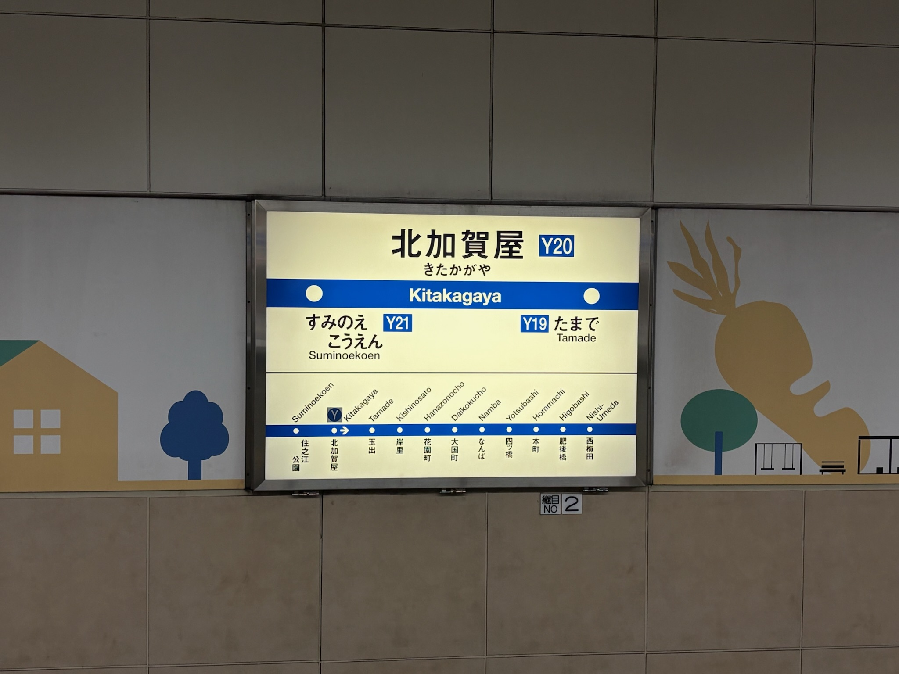
北加賀屋 Y20 · the morning's first stop.
Started at 枠枠 under the red steel frame at CCO Kitakagaya — an old shipyard truss painted oxide-red, holding a free outdoor block party humming below it. DJs who knew what they were doing: smooth pivots between genres, the kind of set that holds its own arc without ever announcing it.
赤鉄骨下 · 枠枠, mid-afternoon under the steel.
South from Kitakagaya into 粉浜商店街, a quiet shotengai. Stumbled into 一光道具店, an antique shop with the kind of inventory you'd want a whole afternoon for. Further down the arcade, a small knife-sharpening shop under a navy noren — 研ぎ処 藤五. The owner in indigo workwear, fifty years of patience behind him, walked us through stones and steels. Walked out with a santoku.
研ぎ処 藤五 · the master and the santoku.
A few minutes further south to 住吉大社. The crowds thin the further south you go. At the entrance, a bronze 狛犬 holding the gate — copper greened by a century of weather, mouth open in 阿形.
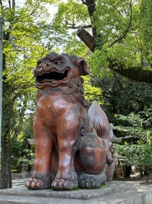
狛犬 · the guardian at the gate.
Inside the shrine grounds the famous 太鼓橋 — the sori-hashi — arched almost vertically over the pond, lacquered the same red family as the truss back at Kitakagaya. Mira up there in the pines, the bridge holding her like a stage prop.
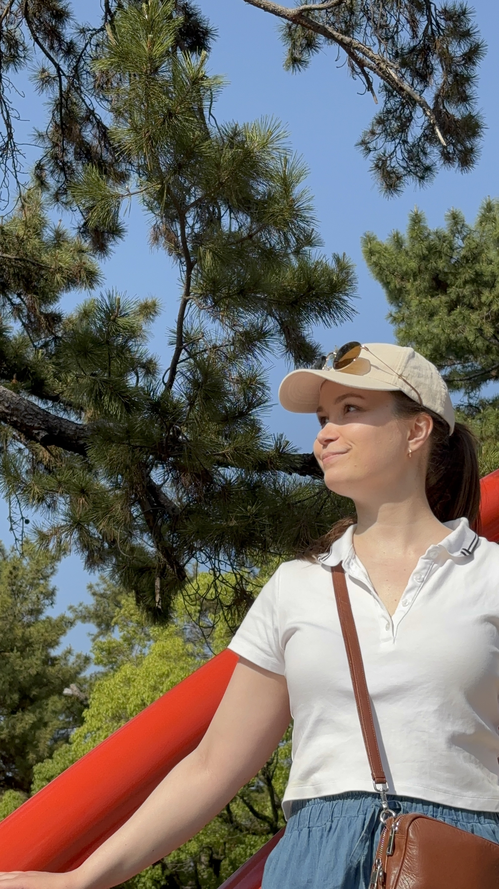
太鼓橋 · the sori-hashi.
Mira pulled a small white ceramic rabbit from the omikuji shelf — the slip rolled tight inside it. 第一番 大吉. 難波江の空にやどれる月を見て またすみのぼる我が心かな.
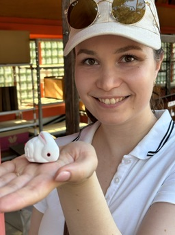
The 兎 in her palm.
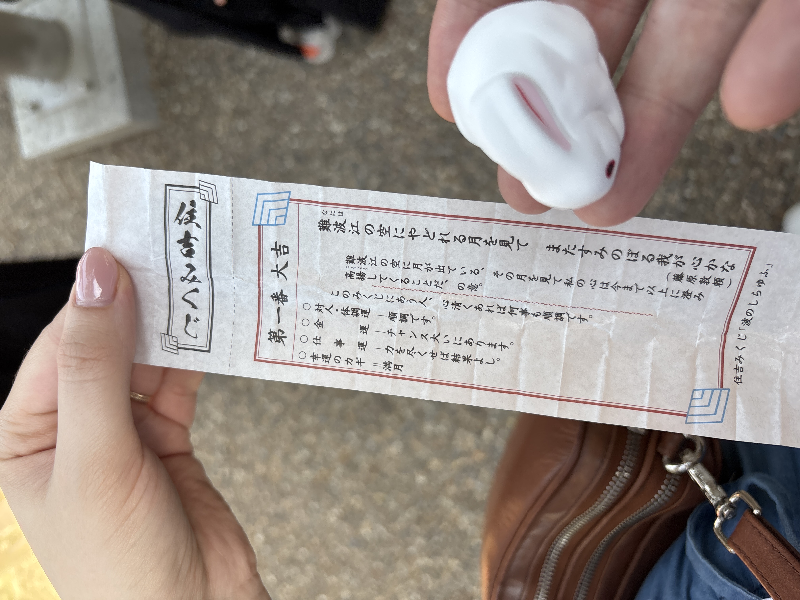
第一番 大吉 · the best you can pull.
Lunch a few steps from the shrine at タコリバ 住吉大社本店, a takoyaki spot with Showa-era fittings — yellowing signage, folding stools you remember from somewhere even if you've never been there.
Back north on the Nankai, out into Namba Parks — that strange curved tower above the terraced gardens, surfacing in the late afternoon sun.
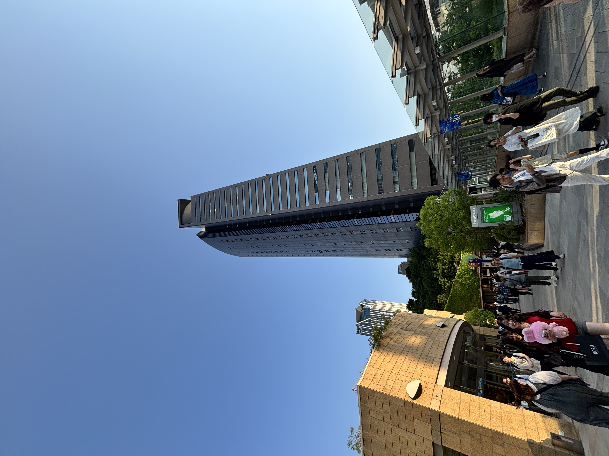
なんばパークス · the curved tower above the terraces.
East into Den-Den Town for a slow walk through the racks. サウンドパック 日本橋四丁目店 — a small room of stacked cardboard boxes and tightly-packed shelves, a クラシック sign yellowing above, a Godzilla and a Yamato spaceship watching from the top corner. The find of the day: YMO's debut, ¥1,380 — Hosono, Takahashi and Sakamoto's faces tiled across the sleeve like a passport-photo grid. A whole soundscape for less than the price of a coffee back home.
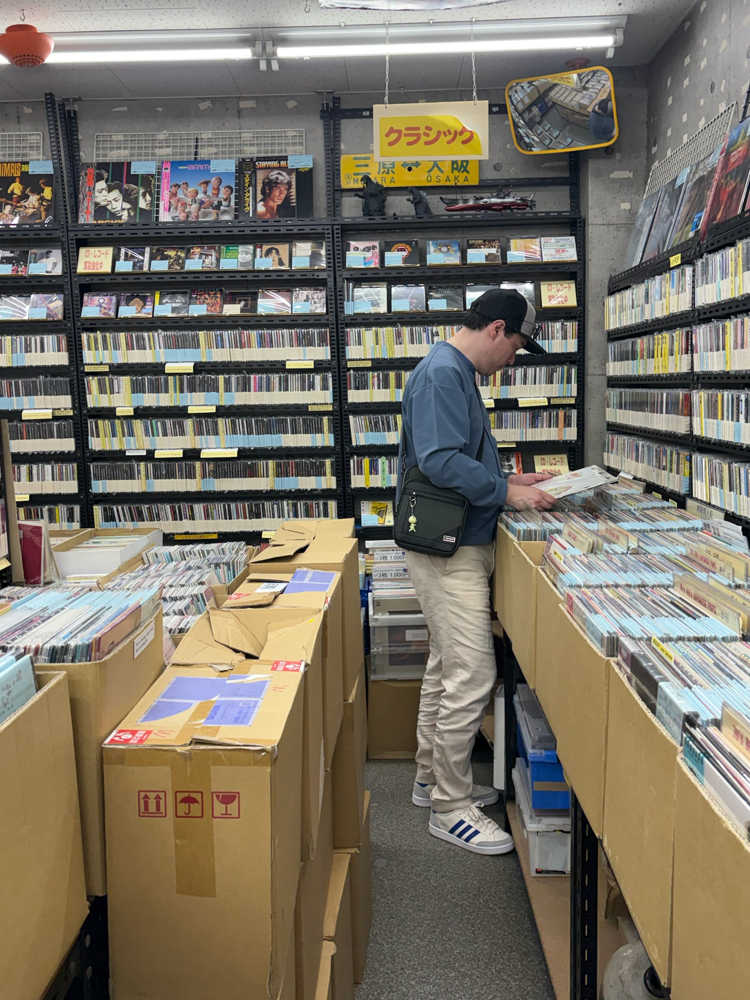
サウンドパック · the hunt.
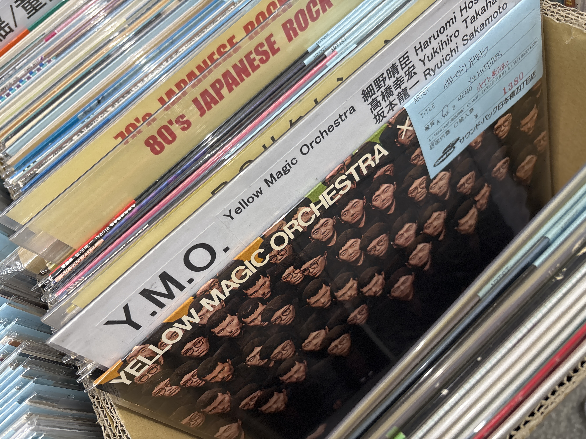
Y.M.O. · the find.
Closed the day at 道頓堀クラフトビア醸造所 inside Namba CITY. Cold beer. Feet finally allowed to stop.
The longest arc yet. A generous one.
noticed in passing
One of Osaka's 創作マンホール · the city duckling among cherry blossoms, half-faded into the pavement · and on a side wall around the corner, a Banksy-style stencil — kimono girl, paper umbrella, a tree bursting into hearts instead of petals
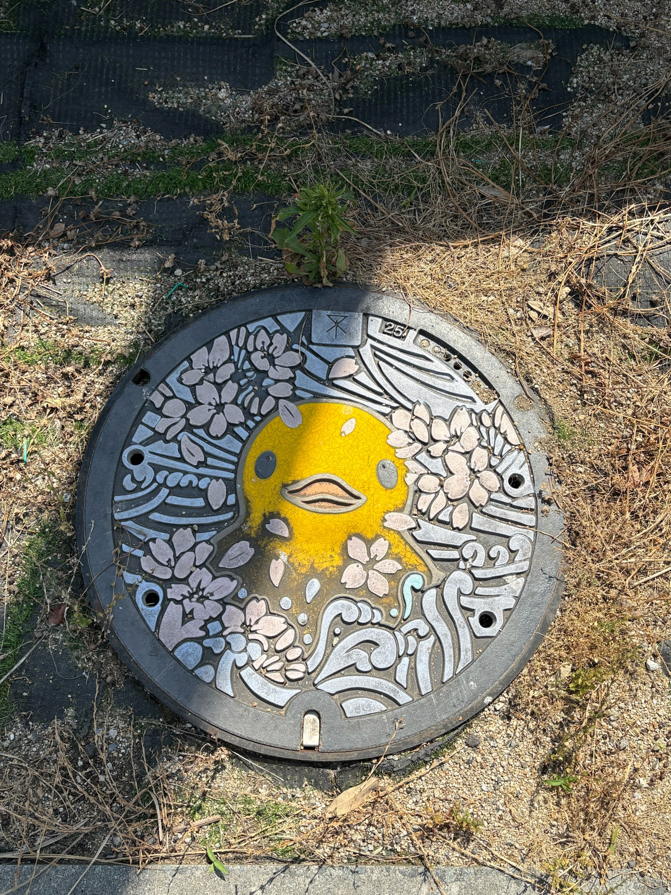
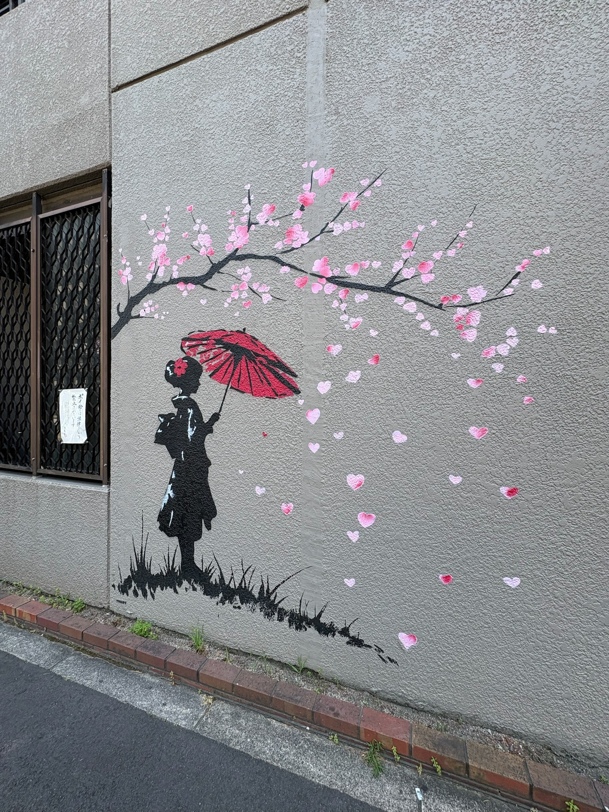
to revisit
一光道具店 in 粉浜 · the kind of antique shop you'd happily lose a Sunday in · ikko-dogu.com
17
Sun
日曜
記
Kazumi · うめきた · 天満
晴れKujo → Umeda → 天満 → Kujo
The day before Yucho
Sunday. The recharge day before the bank. Slept in. A taxi to Umeda rather than working the trains — the kind of decision that defines a Sunday on the road.
Met Kazumi-chan and Yu-kun at the station. A short detour into the supermarket, and the first quiet astonishment of the day: a tray of strawberries from Nara — 古都華, Kotoka — boxed like jewellery, each one placed by hand.
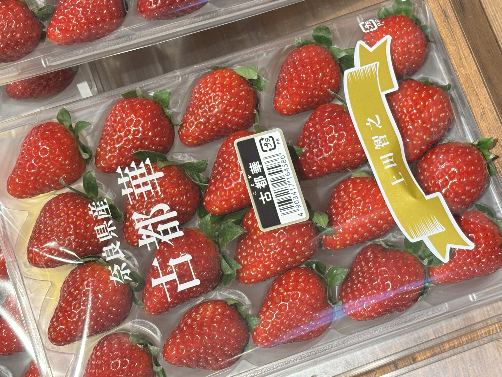
奈良県産 古都華 · packed like jewellery.
Up to Daimaru 13F for the Pokémon Center Yu-kun had been looking forward to. A wall of children's voices, parents in tow — and a separate snaking queue of gaijin otaku at the registers that didn't seem to move. Mom, dad and Kazumi went a floor down for coffee while we tried. Twenty minutes in, we gave up. We'll try again Tuesday or Wednesday — a weekday should let the floor breathe.
After coffee, mom and dad took a taxi back to Kujo — enough foot mileage for one day. We carried on.
Mira had been hoping to taste proper mochi, so down to Hankyu B1F where Kazumi led the comparison — modern fruit-and-cream daifuku against the older kinako-and-mochi pairings. Both excellent. With Osaka heating up by midday, the ichigo daifuku took the round; the kinako can have its rematch in cooler weather.
Three contenders · the ichigo took the round.
Out into うめきた公園, the new strip of green between the station and Grand Front. Children splashing in the shallow water-court at the edge of the lawn. Beyond them, a soft swell of Arashi fans gathered for a closing-chapter memorial — grey idol bags, homemade uchiwa, the gathered weight of a band that meant a generation. Mira watched, half-bemused, half-moved. We found shade and a patch of grass, and the mochi box opened a second time.
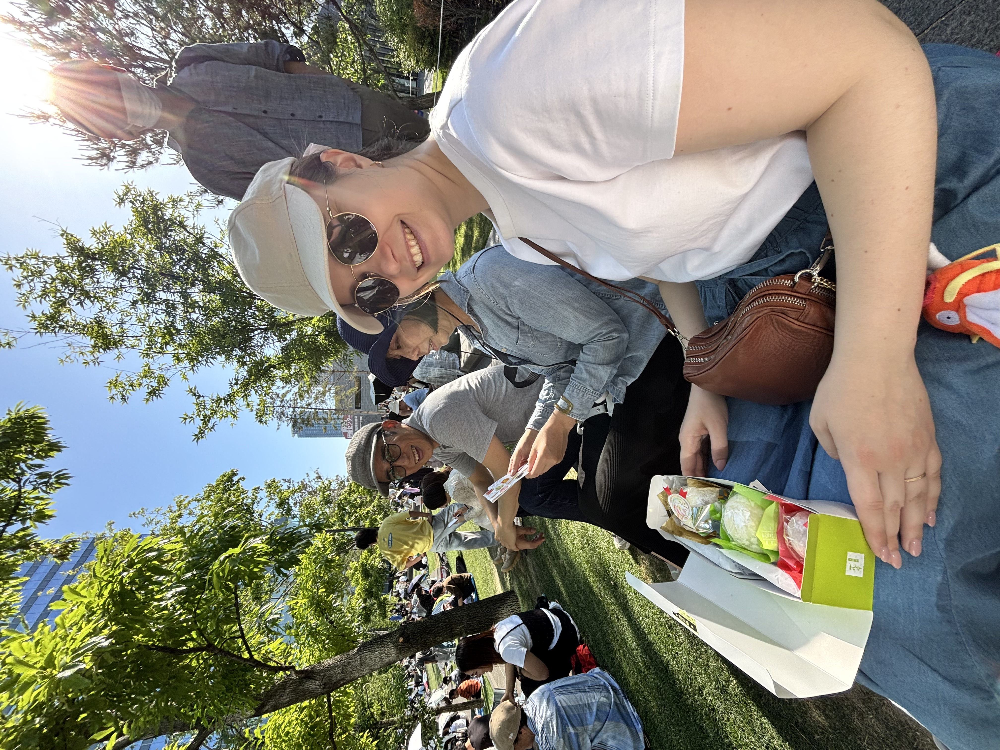
うめきた公園 · second opening of the mochi.The Arashi crowd, the kids' pool, the new park.
Then Yodobashi, supposedly just to look. Came out with a Nikon Zfc that wasn't supposed to follow us home. (It did.)
Toward Tenma · the platform momentarily still.
JR loop line north to 天満. The light shifting toward evening, the elevated tracks throwing long shadows down the alleys, lanterns coming on one by one. A counter at もつ焼き 独歩 for motsu and Kinmiya — shoulder-to-shoulder seating, skewers passed across the counter. Further along the run, kushi places: fried konbu, beef tendon, chicken breast, and the dip-once rule on the sauce — classically, beautifully Osakan.
もつ焼き 独歩 · Tenma's first stop.
The last stop was a sumi-grill spot a few corners over — a konro brought hot to the counter, shochu rounds with lychee and shiso, an umeshu, the obligatory nama. The kind of long, slow evening where one drink folds into the next.
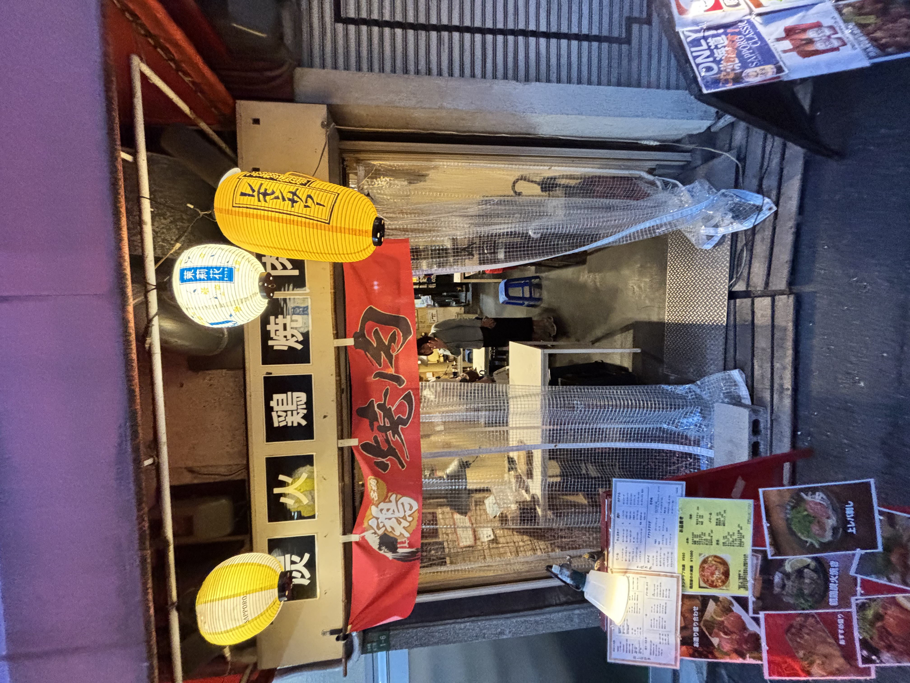
炭火 · the konro at the counter.
The talk drifted to Japan and Finland — how far apart the two are by every metric except the ones that matter. Sauna and sentō. The space given to silence. Respect for craft over speed. Kazumi laid out Wednesday in advance: Kyoto, kimonos, temples at her unhurried pace.
Recharged. Yucho tomorrow.
18
Mon
月曜
記
ゆうちょ · 解約 · お初
晴れKujo → ゆうちょ大阪支店 → Kujo → 露天神社
Yucho · 解約, and Ohatsu
Monday. The bank day. ゆうちょ大阪支店 inside the central post office, dad with the 通帳 and 届出印 in hand, the 相談シート in his pocket, the four sequenced asks rehearsed.
The hard answer arrived early in the conversation. ゆうちょ is the strictest of Japan's banks: domestic only, full stop. No 国際送金. No instruments that carry money abroad. No accounts at all for anyone without a registered Japanese domicile. The careful sequence we'd prepared had nowhere to escalate — the path through the post bank doesn't exist anymore. There was nothing to negotiate.
Only one option remained: close the account, take the proceeds in cash, declare them at customs on both ends. The 通帳 came back across the counter with a red 解約 stamp dated 8.5.18. The cash came back in counted bands. Walked out into the lunchtime crowd quieter than we'd walked in.
解約 · 8.5.18 · the line drawn.
Back to Kujo. Spread the customs paperwork across the kitchen table — Japan's outbound declaration on one side, Finland's inbound on the other. The forms want every figure, every source, every signature. By the time the last box was ticked the afternoon had used itself up.
To shake it off — and because Umeda holds more than the bank — we went to find お初天神, the shrine of Ohatsu, tucked into the office-tower grid above Sonezaki. The official name is 露天神社. The popular one remembers Ohatsu and Tokubei, the lovers from Chikamatsu's 1703 puppet play, who walked to this shrine and died together for the sake of debts that wouldn't be paid. The ema racks now hang heavy with heart-shaped tablets.
お初天神 · the old roof, the new towers.お初と徳兵衛の物語 · the love-suicide tale.
Bowed. Tossed a coin. Stood under the eaves for a minute and let the Umeda traffic flow past on three sides. It's the kind of shrine that exists by being smaller than the buildings around it — proof that something can be both engulfed and intact.
解約. Cash in hand. The shrine still standing in the towers.
19
Tue
火曜
記
戸籍 · Nara · 九条
晴れKujo → 西宮市役所 → Umeda → Kujo
Nishinomiya · 戸籍, and Kujo Kimi
Tuesday. The plan had been Kobe — beef, Kitano, the koseki errand as a side stop. The koseki errand turned out to be the day.
Hanshin to 西宮市役所, 戸籍住民課 on the first floor. The 窓口 clerks were generous with their time and quickly clarified the path: the municipality only keeps the records — the actual discussion for adding Asa to dad's koseki has to be with the 法務局, the Legal Affairs Bureau. Reconnaissance only, as planned, but a clean next handle for the Helsinki-side process.
西宮市役所 · the request, with Finland in the address line.
Since we were there, we asked if they could pull whatever Kawamura records the archives still held. The clerks took the question seriously and went looking. Past dad's line, past おじいちゃん Keinosuke, into the koseki of 曾祖父 河村 治郎造 — Jirōzō — with his wife よし at the heart of the household. Brush-written, vertical-format, the kind of record made when the country was still organising itself in ink and hanko.
曾祖父 治郎造 & よしの戸籍 · brush, ink, four generations back.
And the quiet revelation in the columns: the Kawamuras were from Nara. Osaka was a later move, a chapter rather than the origin. Dad had a vague sense, but seeing the brush-written entries made it concrete — the original 本籍 written in characters that haven't been used in everyday signage for a hundred years.
The archive dive ate the morning and the early afternoon. Kobe — beef, Kitano — gave way without much regret. Hanshin back to Umeda and into Lucua instead, where Mira found a small AI robot we'll meet properly once it's plugged in at home.
Dinner in our own neighbourhood at last — 九条 きみ on 1-6-8 — local okonomiyaki at the counter, parents settling in under the wall of photo-menus, the AC humming over the teppan. The kind of place that's been here long enough that the regulars don't look up when foreigners walk in.
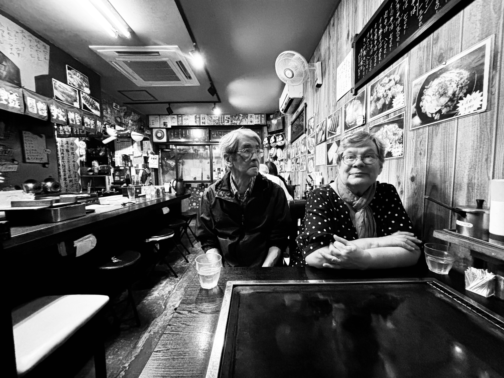
九条 きみ · the parents settled in, our local at last.
From Nara, after all. Dinner around the corner.
20
Wed
水曜
記
着物 · 八坂 · 清水 · 茶道
晴れKujo → 河原町 → 八坂神社 → 清水寺 → Kujo
Kyoto · 着物, and obasan's tea set
Wednesday. The Kyoto day, planned and choreographed by Kazumi from end to end. Our only job was to be present.
Hankyu from Umeda — the deep maroon carriages that feel like a different era the moment you step into them. Nakamura-no obasan joined us at 洛西口, settling into the family group as if she'd always been part of the cast.
阪急 · the maroon carriages, Kyoto-bound.車内 · the family at ease.
At the kimono rental shop near 河原町, everything had been arranged ahead of us. We picked what we liked — Mira in blue-and-white florals with a red obi, mine a deep teal — and the rest was theirs to do. Folding, tying, tucking. The kind of expertise that turns dressing into a brief ritual.
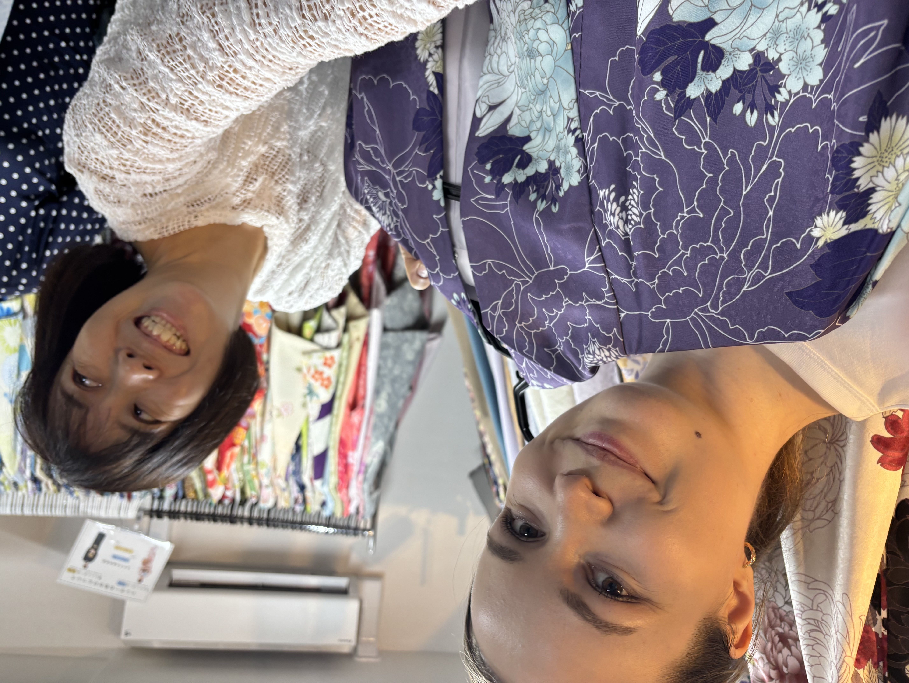
Fitting · trial layers.The shop master · in his own.
Seven of us out on the street in 着物 — Kazumi, Yu-kun, Nakamura-no obasan, mom and dad, Mira and me. Drew smiles from passersby. The sneakers under our hems gave us away as visitors; nobody seemed to mind.
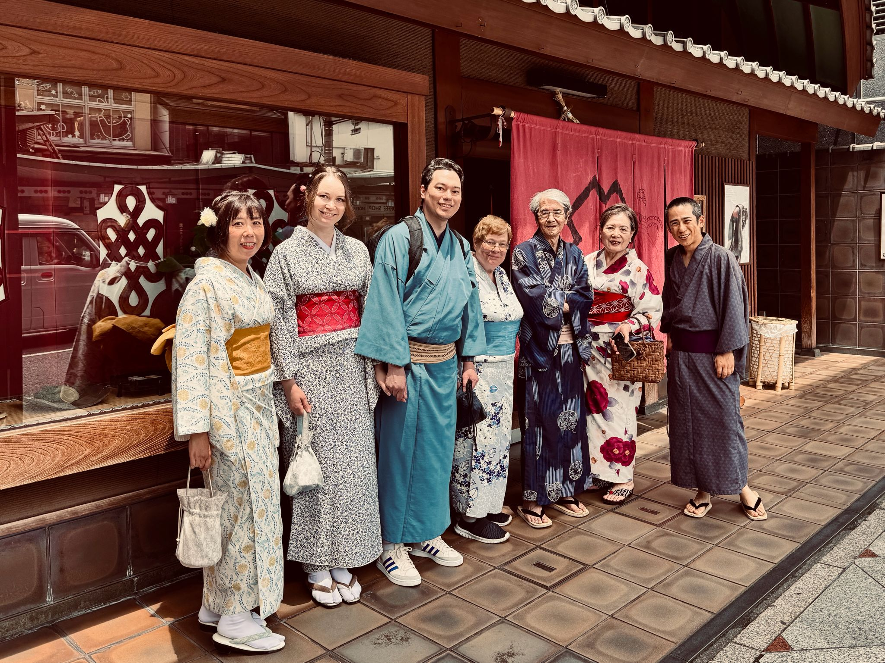
Seven of us in 着物 · outside the shop.
Walked up to 八坂神社. From there the group split — parents and obasan to a quieter spot for tea, Mira, Kazumi, Yu-kun and I onward toward 清水寺. A brisk walk uphill under the scorching Kyoto sun. Stopped briefly in a quiet garden along the way for photos.
八坂神社 · Mira and Nakamura-no obasan.
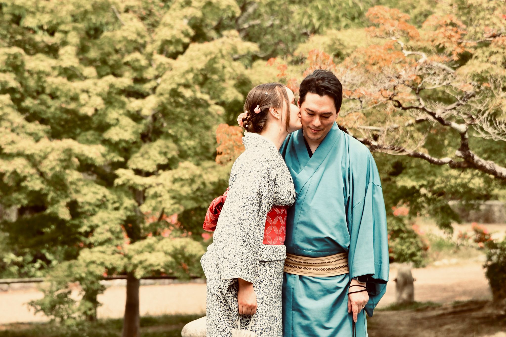
Garden quiet · the moment before the climb.
清水-dera at the top — the famous 舞台 cantilevered out over the slope, the long view east toward the Higashiyama hills. Photos at the veranda, every direction full of couples in 着物 chasing the same shot.
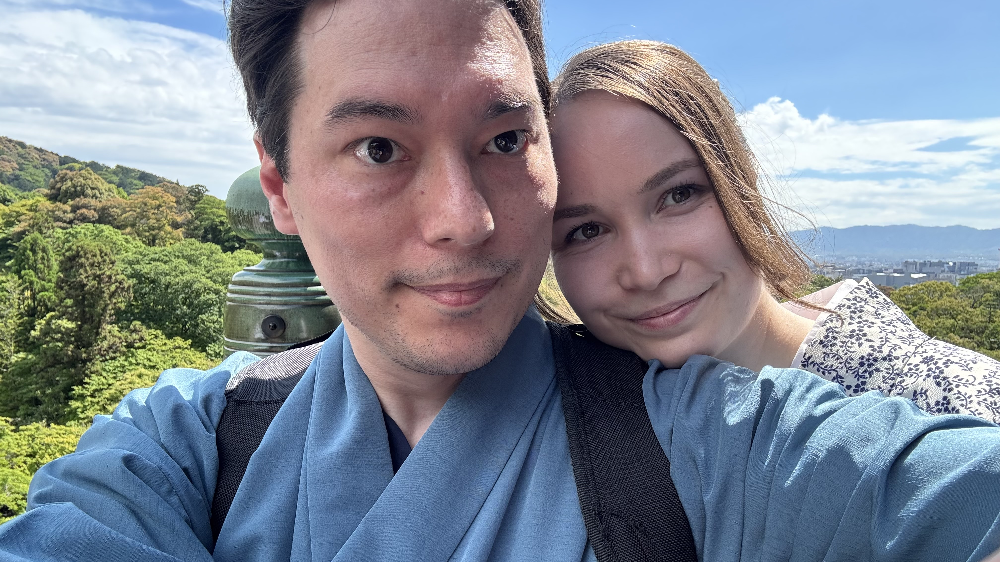
清水の舞台 · the view, the heat, us in 着物.三重塔と 柚子 · classic Kyoto verticality.
Climbed down into Maccha House for the cooldown — matcha pizza, matcha drinks, matcha-flecked everything. Slightly absurd, perfectly cooling.
Further down the slope, a tiny old-things shop pulled us in for a few minutes — and the day's vinyl haul: Anri's Timely!! and a Funky Stuff LP, both at prices that felt almost generous.
Returned the kimonos, then over to Nakamura-no obasan's home for a long cool-down — and the day's quietest moment. She presented Mira with a tea-ceremony starter set: a ninety-year-old 扇子, with the bowls and utensils to begin practice. The kind of gift that arrives both as object and as invitation.
It looks like Mira may have just begun a long path with 茶道 — 裏千家 or 表千家, decision pending.
Seven in 着物. A tea set, and a path beginning.
21
Thu
木曜
記
帰国 · KIX → HEL · 北極
曇り → 雲海 → coldKujo → Umeda → KIX → HEL
Home · 帰国, and the two customs halls
Thursday. The last day. Packed the Kujo Airbnb in the kind of quiet that only departure mornings have.
Called a taxi for the parents and the suitcases over to the APA Hotel, where Yu-kun had booked a day room. The self check-in machines did their usual painful work, but we got them settled on the 23rd floor and exhaled.
23階 · the Osaka sky on departure day.
Mira and I peeled off for Shake Shack at Umeda and one last gift run. The kind of small Western indulgence that feels right exactly once on a trip, and only on the last day.
Shake Shack · Umeda · the green straw celebration.
Tea and a matcha roll cake afterwards — the last slow moment in Japan. A green-tea sponge with a single dried bloom on top. Eaten without urgency.
煎茶 · in the glass cup.抹茶ロール · the last slow bite.
Met Kazumi and Yu-kun afterwards. They took Mira to pick up the last pieces of her tea-ceremony kit while I went back to collect the parents from the APA. Reconvened at the Hankyu airport bus terminal — the Go app refused the destination for reasons it wouldn't explain, but we made it work. Final farewells. Then the rainy congested highway south to KIX.
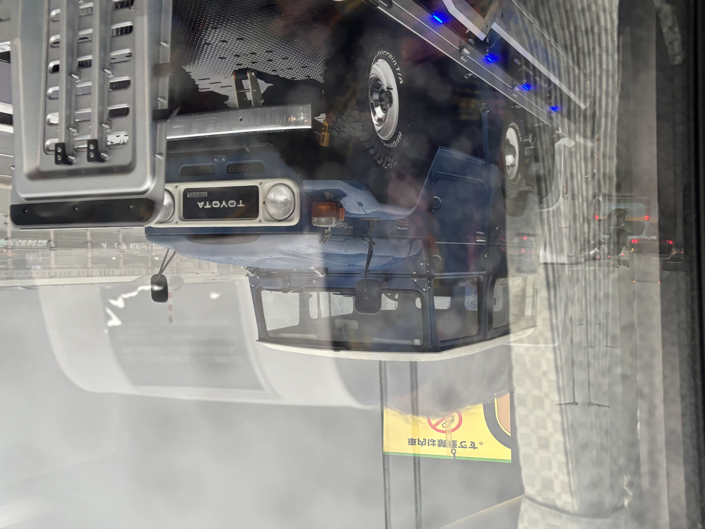
KIX 行き · a vintage Land Cruiser through the bus window.
Customs at KIX went unexpectedly smoothly. Officers respectful, questions measured, the whole inspection feeling — as I'd hoped but hadn't quite expected — ceremonial. A significant border being crossed by a family carrying significant paperwork, and the form being held with care.
The new KIX lounge upstairs offered a comfortable wait. The terminal restaurants might have been the better choice for food, but the lounge was included — and after the morning's logistics, a quiet seat was worth more than dinner.
KIX ラウンジ · the wait, with departures board.
AY068 lifted from KIX on time. The two of us got an upgrade — Mira and me in seats close by to the parents, all four with the longer legroom and the better screens for the long northward arc.
The route runs north over Siberia, across the polar cap, down through the Norwegian Sea. The flight-path screen showed the plane suspended above the Arctic, ground speed 926 km/h. Outside the window, ten kilometres of air and then ice.
Breakfast served somewhere over Finnish Lapland — the map showing Helsinki ahead, Murmansk to the right, the descent already begun.
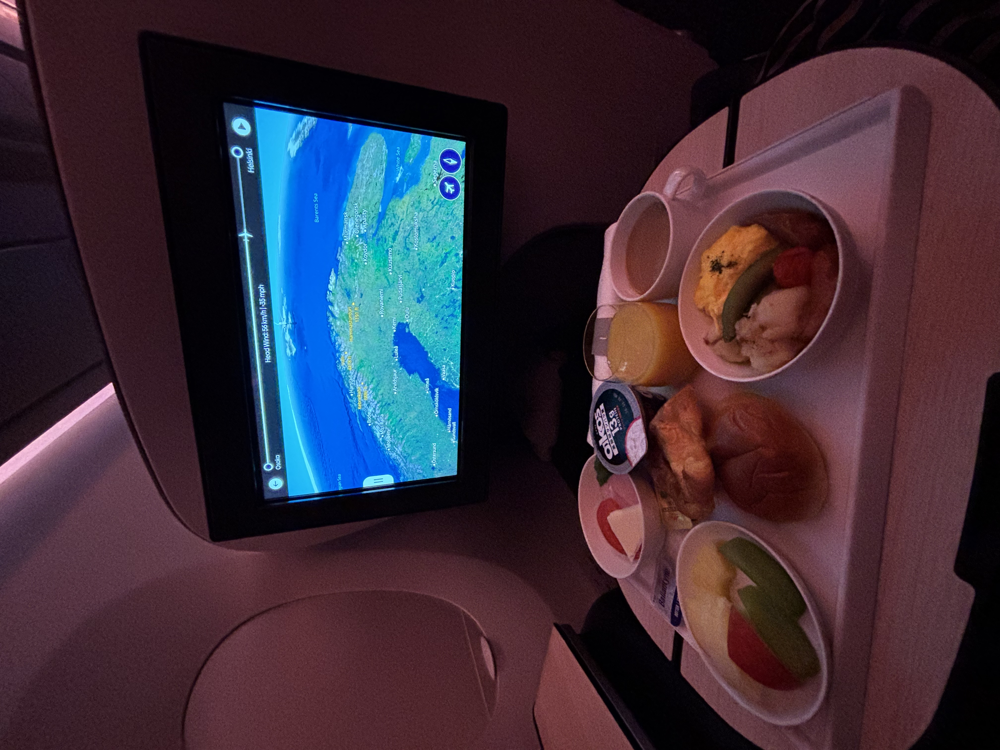
朝食 · Lapland through the screen.
Helsinki on the ground was a different climate. Finnish customs slow and cold — efficient enough but procedural, with no acknowledgment that what had just been crossed might be anything more than a list of declarations. A sharp contrast against KIX's ceremonial register the night before. The cross-cultural family lives in exactly this contrast — two countries, two procedural temperatures, the same paperwork carrying different weight at each end.